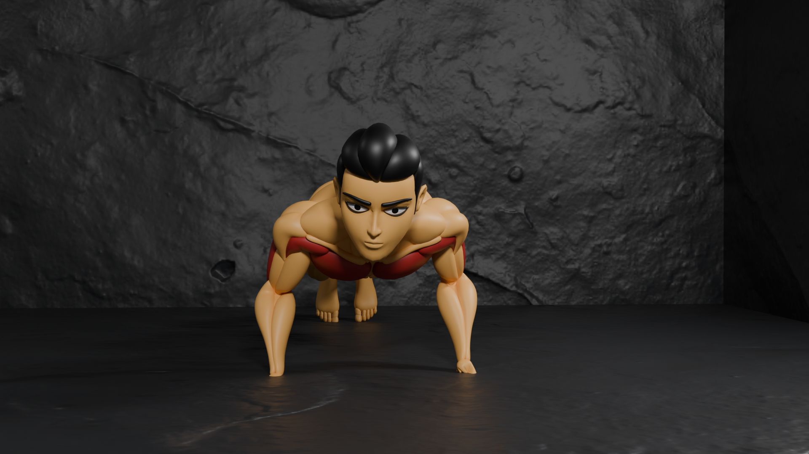

Push-Ups Tutorial üèãÔ∏è
Build Strength. Improve Form. Train Smarter.
1. What Is a Pushup?
A pushup is a bodyweight exercise that strengthens your chest, shoulders, triceps, and core— no equipment required. It’s one of the best exercises for overall upper-body strength and muscle endurance.
2. Muscles Targeted
Primary Muscles
Chest

Front Shoulder
Tri-ceps
Secondary Muscles
core muscles
Learn more about core muscles üëâ Core Muscles Info
3. Step-by-Step Instructions
✅ Starting Position:
- Hands on the floor slightly wider than shoulder-width.
- Legs straight, toes on the ground.
- Body straight from head to heels.
- Eyes looking slightly ahead.

✅ Lowering Phase:
- Bend elbows and lower your chest slowly.
- Keep elbows at 45°.
- Lower until chest is a few inches from floor.
✅ Pushing Phase:
- Push back up by straightening elbows.
- Keep body straight.
- Fully extend arms at top.
Breathing: ⏬ Lower = Inhale | ⏫ Push up = Exhale
4. Reps & Recommendations
- Beginners: 5–10 reps × 2 sets
- Intermediate: 10–20 reps × 3 sets
- Advanced: 20–40 reps × 3–4 sets
Do them 3–4 times per week with proper form.
5. Variations
üü¢ Beginner
- Knee Pushups
- Incline Pushups
üü° Intermediate
- Standard Pushups
- Close-Grip Pushups
üî¥ Advanced
- Decline Pushups
- Diamond Pushups
- Clap Pushups
6. Benefits of Pushups
- ✅ Builds upper body strength
- ✅ Improves posture
- ✅ Activates core muscles
- ✅ Requires no equipment
- ✅ Boosts endurance
- ✅ Helps burn calories
7. Common Mistakes to Avoid
- ❌ Hips sagging or lifting too high
- ❌ Elbows flaring out too wide
- ❌ Not going low enough
- ❌ Head dropping down
- ❌ Rushing the movement
Fix: Controlled reps, tight core, straight posture.
8. Why Pushups Matter in Fitness
- Foundation exercise for strength training
- Prepares your body for advanced movements
- Great warmup or main workout exercise
- Works multiple muscle groups at once